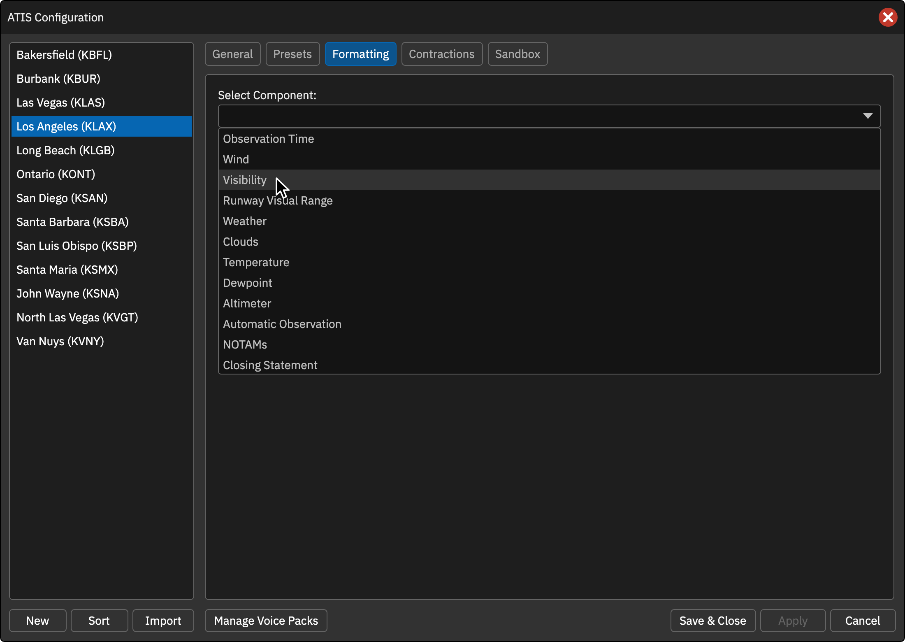

格式设置
Formatting 为每种气象元素分别设置 Text（文字） 和 Voice（语音文本）。预设中的 [WIND] 等方括号变量先选择元素，元素内部的 {wind_dir} 等花括号变量再填入具体数值。
可配置项目
数值样式
部分元素提供 Variable Format 表，允许分别控制文字和语音：Default（默认）、Digits（数字）、Serial（逐位读数）、Group（成组读数）。Suffix 按原样追加，需要间隔时自行添加前导空格。
FAA / 非 FAA 是输出格式区别，不是选择 VATSIM / CAN 网络。部分 ICAO 气象设置只在非 FAA 格式的席位显示。
修改后点击 Apply，再到沙盒 Refresh ATIS 检查。配置语音文本并不替代语音引擎或语音包。
操作截图参考
以下为上游原版截图，保留英文标签。用于定位操作；品牌、登录字段与网络行为以本页 CAN 说明为准。
